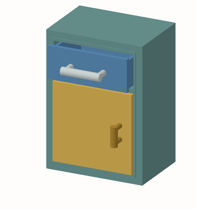
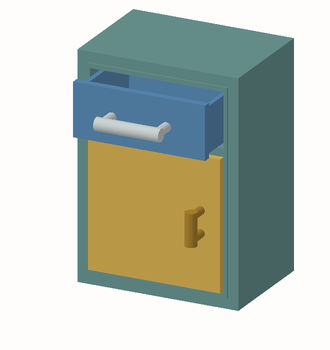
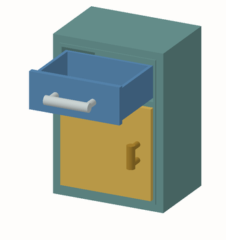
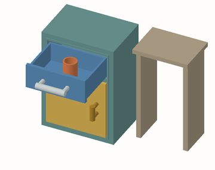
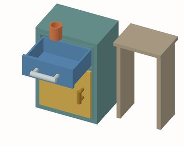
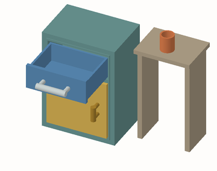

4.5 From physics engines to robot learning tasks
Opening a drawer involves several jobs: calculate contact and motion, organize the robot and its surroundings, define the task, and choose actions. Simulation software connects these jobs so that a robot policy can practice and be evaluated.
A policy is a program or model that chooses an action from an observation. An environment is the simulated world and task that the policy interacts with. The diagram locates the software used in two common environments.
From a task to physical motion
Follow either branch downward. Select a name to read its explanation.
ManiSkill is built on SAPIEN and uses a PhysX physics backend. RoboCasa builds on robosuite, which uses MuJoCo. The sections below follow these responsibilities from physical motion up to a complete task.
4.5.1 Physics: calculate contact and motion
MuJoCo[1] and PhysX[2] are physics engines. They use a supplied physical model and its current state to calculate how it evolves over a small time interval. For our cabinet, the model includes the drawer’s mass, sliding joint, collision shapes, and friction settings, prepared as in Section 4.2.
Suppose a robot closes its fingers around the handle and begins pulling. The engine performs three connected calculations:
- Find contacts. Use the collision shapes and current positions to find where fingers meet the handle and where other surfaces may touch.
- Calculate the physical response. Combine motor forces, gravity, contact forces, friction, and joint constraints. Contact can transmit the robot’s pull to the drawer. Friction affects whether the fingers hold or slip; the sliding joint guides the drawer along its rail.
- Advance the state. Calculate updated velocities and positions for the next small time step. The drawer’s opening distance and speed are part of that new state.
One short physics step
The physical model and control inputs determine the update.
- 01Current state

Drawer opening and speed; robot positions and speeds. - 02Physics engine
- Find contacts. Where do collision shapes meet?
- Solve the response. Use motor and contact forces, friction, and joint constraints.
- Advance motion. Update velocities and positions.
- 03Next state

Updated drawer opening and robot / drawer speeds.
Use the updated state as the current state for the next short time step.
The new state becomes the starting state for the next step. Repeating these short steps produces the full movement. If a grasp slips, the finger–handle contacts change, and later steps calculate the resulting motion. The experiment’s task code uses these states to judge progress. See MuJoCo’s dynamics description.
4.5.2 Scene support: organize objects, robots, and cameras
SAPIEN[3] provides tools to create a scene containing the cabinet, a robot, the floor, lights, and virtual cameras. Each object has a pose and can have both a visual appearance and physical properties. SAPIEN connects its PhysX physics system with rendering and scene-management tools. SAPIEN project.
For the cabinet, advancing physics changes the drawer’s position. Rendering then draws the scene from a chosen camera, including the drawer at that position. A camera observation is an image; a state observation can instead contain numerical values such as joint positions and speeds. This connects rendering in Section 2.5 to the moving scene.
robosuite[4] organizes robot environments around MuJoCo. It supplies reusable robot models, grippers, controllers, objects, and observation interfaces. RoboCasa uses this foundation to construct its kitchen tasks. A controller translates a requested movement into robot control inputs, as explained in Section 4.4.2. robosuite’s components.
These frameworks make it easier to assemble and operate a scene. The task definition adds a goal and a way to judge the outcome.
4.5.3 ManiSkill: define an opening task
ManiSkill[5] provides robot manipulation environments, demonstrations, and interfaces for learning and evaluation. A task specifies the scene, starting conditions, available observations and actions, and success criteria.
The cabinet example
In the documented OpenCabinetDrawer task, a Fetch mobile manipulator approaches a cabinet and opens a selected drawer. The environment selects a cabinet and target drawer and initializes the robot’s position. Success requires the drawer to reach at least 90% of its opening range while its motion is sufficiently small. Official task definition.
For our teaching cabinet, whose drawer travels 76 cm, the same opening threshold would be 68.4 cm. The environment reads the simulated opening and motion to evaluate that condition. This is a chosen task criterion; the physical motion is calculated by PhysX through SAPIEN.
How it is used. Connect a policy, reset the environment to a starting condition, and repeatedly supply actions. Each interaction returns observations and task information. During evaluation, record whether the policy succeeds across multiple trials. During learning, an algorithm can use demonstrations or collected interactions to improve the policy. ManiSkill’s environment interface.
4.5.4 RoboCasa: organize tasks in varied kitchens
RoboCasa[6] supplies kitchen scenes, interactive furniture and objects, robot tasks, and demonstration data for training and evaluation. Its environments build on robosuite, with MuJoCo calculating the physical motion. The collection includes individual skills, such as opening drawers, and longer tasks that combine several skills. RoboCasa project.
The cabinet example
Consider a teaching task: open the drawer → take out a cup → place the cup on the counter. Opening creates access to the cup; grasping and placement complete the activity. A task implementation specifies the initial cup location and the required final conditions, such as the cup being on the counter and released by the gripper.
How it is used. Run a policy in selected kitchen environments and evaluate the task outcome over repeated trials. Changes in layout, object placement, and appearance let researchers study how well a policy works across different situations. Demonstration data can also support learning the required skills. RoboCasa’s environments and learning resources.
From one skill to a kitchen activity
The drawer example defines success; the kitchen example combines several actions.

- 01Open the drawer

Create access to the cup. - 02Take out the cup

Lift the cup clear of the drawer. - 03Place on the counter

Leave the cup on the counter.
Both ManiSkill and RoboCasa support learning and evaluation. Here, the drawer task makes a success criterion concrete, while the kitchen example shows how a task can combine several actions and vary across scenes.
4.5.5 Run, learn, and evaluate
The software layers work together during each interaction. The policy chooses an action, the controller produces control inputs, the physics engine advances the scene, and the environment produces observations and task information.
One interaction in a robot task
An action is executed; its outcome becomes the next observation.
- 01ObservationA camera image or state values.
- 02PolicyChoose an action, such as pulling outward.
- 03ControllerTranslate the requested movement into motor control inputs.
- 04PhysicsCalculate contacts and motion over short time steps.
- 05Task feedbackProvide the next image or state values, reward, and success information.
Return the new observation to the policy while the episode continues.
End the attempt using the experiment’s stopping rule or time limit, then reset.
An episode is one attempt, from resetting the environment until its stopping condition or time limit. The environment can report success during an attempt; the experiment decides when to end it. Repeated attempts provide data for evaluation or learning.
Training changes the policy using demonstrations or interaction data; a reward is a numerical signal that can guide reinforcement learning. Evaluation runs a chosen policy under specified test conditions and records results such as success rate. A VLA, as introduced in Chapter 1, is one possible policy. The environment and physics engine execute the actions it proposes.
References
- Emanuel Todorov, Tom Erez, Yuval Tassa. MuJoCo: A physics engine for model-based control. 2012 IEEE/RSJ International Conference on Intelligent Robots and Systems, 2012. DOI
- NVIDIA Corporation. NVIDIA PhysX SDK. Open-source software, 2026. Accessed 25 November 2026. GitHub
- Fanbo Xiang, Yuzhe Qin, Kaichun Mo et al. SAPIEN: A SimulAted Part-based Interactive ENvironment. The IEEE Conference on Computer Vision and Pattern Recognition (CVPR), 2020.
- Yuke Zhu, Josiah Wong, Ajay Mandlekar et al. robosuite: A Modular Simulation Framework and Benchmark for Robot Learning. arXiv preprint arXiv:2009.12293, 2020. arXiv
- Stone Tao, Fanbo Xiang, Arth Shukla et al. ManiSkill3: GPU Parallelized Robotics Simulation and Rendering for Generalizable Embodied AI. Robotics: Science and Systems, 2025.
- Soroush Nasiriany, Abhiram Maddukuri, Lance Zhang et al. RoboCasa: Large-Scale Simulation of Everyday Tasks for Generalist Robots. Robotics: Science and Systems (RSS), 2024.